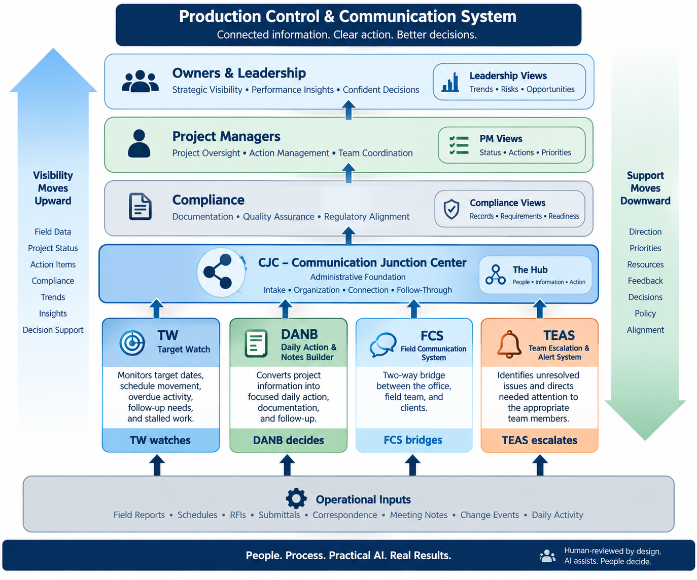

The system was designed to reduce repeated manual checking, strengthen communication, improve follow-up, and make operational information easier to act on across the organization. Rather than forcing every function into one oversized workbook, the architecture separates distinct responsibilities into connected modules while preserving a common source of truth.
One system • clear modules • shared rules • human-reviewed decisions
Central Job Control (CJC)
Role in the whole: the hub and administrative source of truth. CJC brings together intake data, job matching, status logic, source history, approved users, contact information, and manual overrides before information moves into downstream workflows.
Why it exists separately: the core data and business rules need one stable home. Keeping that foundation separate prevents reporting, alerts, and communication tools from becoming competing versions of the same job record.
Daily Action & Notes Builder (DANB)
Role in the whole: turns project information into the day's actionable work—standardized notes, follow-up requests, documentation, and next-step decisions.
Why it exists separately: action logic changes more often than source data. DANB can improve the daily workflow without destabilizing the underlying job record or removing human review points.
Target Watch (TW)
Role in the whole: monitors target dates, schedule movement, overdue activity, holds, stalled work, and missing target-date reasoning—including structured note patterns used to support downstream checks.
Why it exists separately: schedule surveillance is a specialized control function. Reverse-engineering the existing process made it possible to preserve business rules while adding clearer exception and QA visibility.
Field Communication System (FCS)
Role in the whole: provides the communication bridge between office, field, and client-facing work so requests, responses, and operational context are less likely to disappear into scattered texts or calls.
Why it exists separately: communication has a different lifecycle from production data. Separating it keeps the operational record clean while still connecting communication back to the job.
PM Action & Alert System
Role in the whole: converts compliance and project needs into smaller prioritized requests for project managers, focusing first on WIP, then Pre-Production, then Pending Sales, while bundling related compliance updates into the same touchpoint.
Why it exists separately: the control must protect both compliance needs and human workload. Smaller batches reduce overload, create an auditable paper trail, and provide evidence for later PDCA-based improvement.
Leadership & Improvement View — Concept
Role in the whole: turns operational activity into context—showing where work is moving, where it is stalled, and where patterns may require management attention.
Why it exists separately: leadership needs decision-ready visibility rather than every transaction. This layer summarizes the work without replacing the source history used by the operational team.
Human-reviewed by design: AI may assist with organizing information and drafting communication, but source validation, exceptions, approval, and final decisions remain with people.